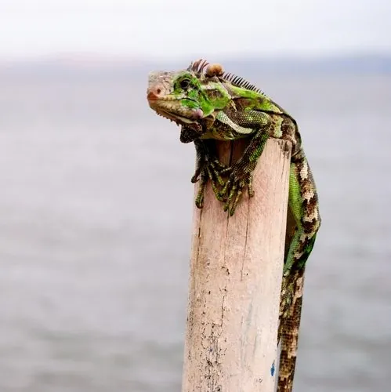

爬行动物 · 动物界
绿鬣蜥 Iguana iguana

原产于中南美洲的树栖蜥蜴，幼体翠绿、成体有锯齿状背鬣，成年后几乎完全以植物为食，是常见异宠。
- 分类
- 门脊索动物门纲爬行纲目有鳞目科鬣蜥科属美洲鬣蜥属
- 栖息环境
- 中南美洲热带雨林、红树林与河岸的树冠层
- 地理分布
- 墨西哥至巴西南部的热带美洲，并被引入佛罗里达、夏威夷等地
- 保护级别
- IUCN 无危（LC）；中国未列入国家重点保护名录（外来物种）
物种志
绿鬣蜥体长可达 1.5 米，其中尾部约占一半，成年雄性的背鬣和喉扇格外发达。它全身呈鲜亮的绿色，身体两侧有深色竖纹，尾上带有黑色环带；头顶长有第三只眼（颅顶眼），能感知明暗变化；脚趾长而锐利，善于攀爬。
它是典型的树栖蜥蜴，原产于中南美洲热带雨林与河岸，白天在树冠层晒太阳，遇险时会跳入水中游泳逃生。幼体以昆虫及植物为食，成年后转为植食，取食嫩叶、花和果实。繁殖期雄性会变出橙红色并点头示威，雌性每窝产卵约 20–40 枚，孵化期 65–90 天。由于人类捕捉与栖息地破坏，野生种群有所下降；在中国它属于外来物种，饲主不可随意放生。
形态与习性
- 食性幼体食昆虫，成体以嫩叶、花和果实为主
- 体长120–170 cm（含尾）
- 体重约 4–8 kg
- 寿命约 15–20 年
- 繁殖卵生，每窝 20–40 枚，孵化期 65–90 天
- 活动节律昼行性，喜晒太阳调节体温
- 防御遇敌从树上跳入水中逃逸，尾部可抽打
趣味知识
- 绿鬣蜥头顶有第三只眼，只能感光、不能成像，用于感知掠过头顶的阴影。
- 它能在水中潜游数分钟，靠降低心率节省氧气。
- 成年绿鬣蜥几乎完全素食，与幼年时吃昆虫的习性差别很大。